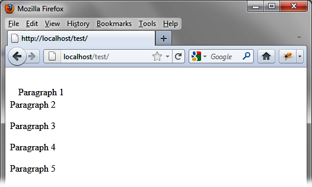

{% include JB/setup %}
{% raw %}
<div>
<div class="calibre13"></div><div class="book" title="Chapter 12. Permutation of Elements in the Page"><div class="book"><div class="book"><div class="book"><div class="calibre13"></div><h1 class="title1"><a id="permutation_of_elements_in_the_page" class="calibre1"></a>Chapter 12. Permutation of Elements in the Page</h1></div></div></div><p class="calibre7">Moving items to insert them elsewhere in the page has become
  indispensable in current web applications. Users move elements visually by
  dragging with the mouse, and the system automatically inserts the moved
  items. Here, everything is handled internally by jQuery UI, which provides
  us the mechanism that implements this functionality.</p><p class="calibre7">Here we call this operation a <span class="firstname"><em class="calibre4">permutation</em></span>,
  because the moved element leaves its place, while the destination (the
  location where the element is deposited) expands to allow the insertion of
  the new element.</p><div class="book" title="Basic Principles of Permutation of Elements"><div class="book"><div class="book"><div class="book"><h1 class="title2"><a id="basic_principles_of_permutation_of_eleme" class="calibre1"></a>Basic Principles of Permutation of Elements</h1></div></div></div><p class="calibre7">Suppose we want to write the HTML code to display a paragraph being
    moved, as shown in <a class="ulink" href="ch12.html#paragraph_1_is_being_moved" title="Figure 12-1. Paragraph 1 is being moved">Figure 12-1</a>. Here, we
    have five paragraphs. The first is selected using the mouse and is moved
    from the list and inserted into a new location.</p><p class="calibre7">With jQuery UI, swappable elements must be inserted into a parent
    element (<code class="literal">&lt;div&gt;</code> or other). All
    elements in the descendants of this parent are permutable with each
    other.</p><p class="calibre7">To specify that these elements are permutable with the mouse in the
    HTML page, the jQuery UI <code class="literal">sortable ()</code>
    method manages the encompassing <code class="literal">&lt;div&gt;</code> in the <code class="literal">&lt;script&gt;</code>:</p><a id="I_programlisting12_d1e10917" class="firstname"></a><pre class="programlisting">&lt;script src = jquery.js&gt;&lt;/script&gt;
&lt;script src = jqueryui/js/jquery-ui-1.8.16.custom.min.js&gt;&lt;/script&gt;

&lt;link rel=stylesheet type=text/css
      href=jqueryui/css/smoothness/jquery-ui-1.8.16.custom.css /&gt;

&lt;div id=div1&gt;
  &lt;p&gt; Paragraph 1 &lt;/p&gt;
  &lt;p&gt; Paragraph 2 &lt;/p&gt;
  &lt;p&gt; Paragraph 3 &lt;/p&gt;
  &lt;p&gt; Paragraph 4 &lt;/p&gt;
  &lt;p&gt; Paragraph 5 &lt;/p&gt;
&lt;/div&gt;

&lt;script&gt;

$("#div1").sortable ();

&lt;/script&gt;</pre><div class="book"><div class="figure"><a id="paragraph_1_is_being_moved" class="firstname"></a><div class="book"><div class="book"><a id="I_mediaobject12_d1e10922" class="firstname"></a></div></div><p class="title4">Figure 12-1. Paragraph 1 is being moved</p></div></div></div></div></div>

{% endraw %}

